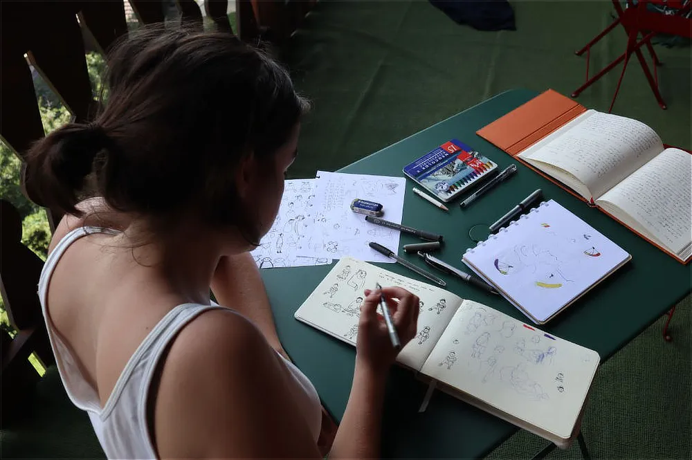

Over mij
Hallo, ik ben Charlotte!
Na het afronden van mijn master Graphic Storytelling aan LUCA School of Arts volgde ik een opleiding Concept Art.
Vandaag illustreer ik kinderboeken, maak ik schilderijen en muurschilderingen, en creëer ik tekeningen op maat. Mijn werk herken je aan de speelse toets die altijd een stukje emotie met zich meedraagt.
Ik vertel graag gevoelige of complexe onderwerpen op een zachte, toegankelijke manier, zodat elke kijker zich in mijn beelden kan herkennen en even kan wegdromen.
Heb je vragen of wil je graag samenwerken? Neem gerust contact op!
Tentoonstellingen
2026 Artiestentoer (Tervuren)
2025 Verbeeld - Cultuurlab Vlaanderen (Kortrijk)
2025 Kunstgrillen (Wilrijk)
2025 Artiestentoer (Tervuren)
2022 Graduation Show Master (Brussel)
2021 Graduation Show (Brussel)
2021 Expo Zorg, Curating The Young (Melle)
